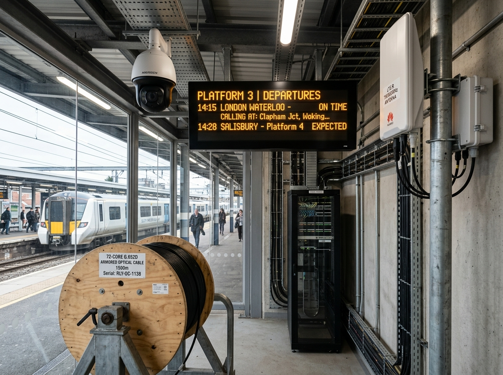
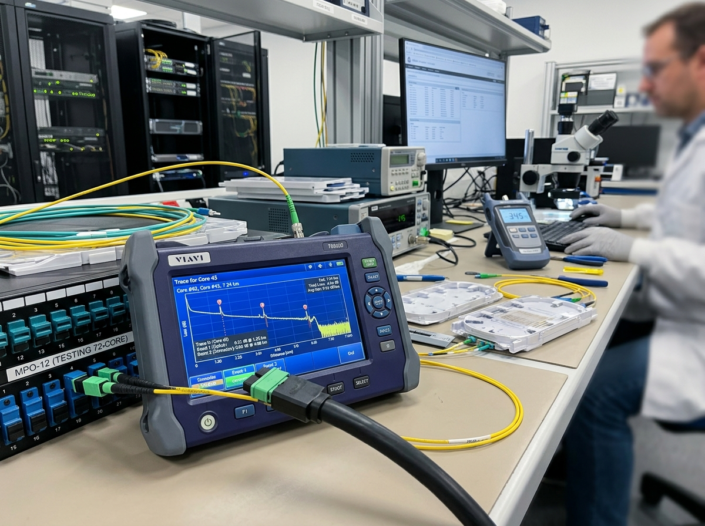
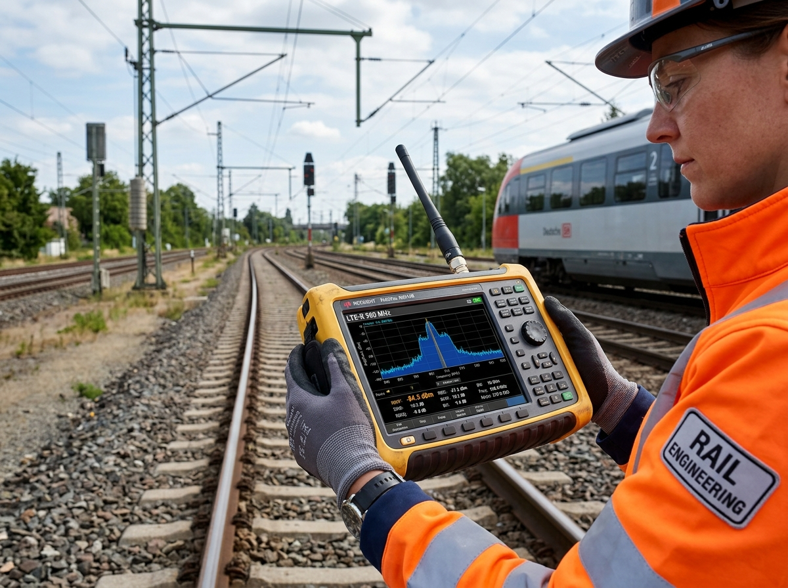

L4 Code: 9000-2-7 | 주관: 현장 시스템팀 / 통신 감리단 | "72-Core 광 접속 & 헷지방안 완벽 수록"
본 지침서는 발주처 품질검사 지침(ITP/ITC)에 맞춰 품질 계획 사전검토, 광 접속 정밀측정, LTE-R 전파검증, ITC 서명체결 4단계 유연 프로세스로 체계화되었습니다. 본문 속 전계강도, RSRP, OTDR, 융착접속, 헷지방안 용어를 클릭하면 친절한 용어 팝업 해설 창이 뜹니다.
발주처 품질검사 계획서(ITP) 및 공사시방서의 품질 기준 사전 정밀 대조.
OTDR 및 광파워미터(1310/1550nm)로 72가닥 전수 광 손실 0.05dB 이하 판정.
스펙트럼 분석기로 전구간 수신 전계강도(RSRP ≥ -95dBm) 정밀 측정 및 필증 확보.
발주처·감리원·시스템 책임자 3자 서명 날인으로 검측 승인서(ITC) 체결.
• 품질계획서 대조
• 광 손실 ≤0.05dB
• 수신 전계 ≥-95dBm
• ITC 3자 서명
💡 핵심 실무 지침:

• 72-Core: 머리카락만큼 가느다란 유리 파이버 72가닥이 들어있는 트램의 메인 통신 고속도로(핏줄)입니다.
• 융착 접속: 두 유리 단면을 2,000℃ 고온 전기 불꽃으로 녹여서 하나로 완벽히 붙이는 정밀 공정입니다.
• 화면 끊김/멈춤: 유리 연결부 불량으로 빛이 새어나가 4K CCTV 및 승강장 안내 전광판 화면이 멈춥니다.
• 통신 블랙아웃: 융착이 나쁘면 열차 제어 통신이 차단되어 대형 통신 장애가 발생합니다.
① 단면 오염: 유리선 끝에 묻은 미세 먼지/기름때
② 절단 각도 불량: 칼날(Cleaver)로 자를 때 단면이 삐뚤어짐
③ 중심축 불일치: 두 유리선의 빛 통로 중심축이 미세 편심 발생
• 1단계 (즉시 재접속): 접속 부위 절단 후 정밀 절삭기 재정리 및 자동 융착 재시행
• 2단계 (예비 Core 전환): 72가닥 중 손실된 코어 대신 여분의 예비 코어(Spare Core)로 우회 포트 교체
• 3단계 (함체 재정비): 접속 함체 알코올 클리닝 및 습기 재포장
💡 핵심 실무 지침:

공기 중을 날아다니는 무선 전파 신호의 세기(Power)입니다. 스마트폰 상단의 안테나 막대가 몇 개 채워지는지와 같은 개념입니다. (단위: dBm)
RSRP = Reference Signal Received Power (기준 신호 수신 파워). 기지국 안테나가 쏘아주는 무선 신호를 얼마나 세게 수신하는지 나타내는 객관적 정밀 수치입니다.
트램은 노선(정거장·교차로·터널)을 달리며 관제실과 24시간 끊김 없이 긴급 무전 및 열차 제어 데이터를 주고받아야 합니다.
만약 전계강도가 -95dBm 밑으로 떨어지면 전파 음영지역이 생겨 무전이 끊기고 긴급 제어 명령 수신이 불가능해집니다.
RSRP ≥ -95dBm 검증은 "동탄트램 전구간에서 24시간 100% 무전 끊김 없이 안전하게 운행할 수 있다"는 것을 입증하는 필수 검증입니다.
💡 핵심 실무 지침:

💡 핵심 실무 지침: